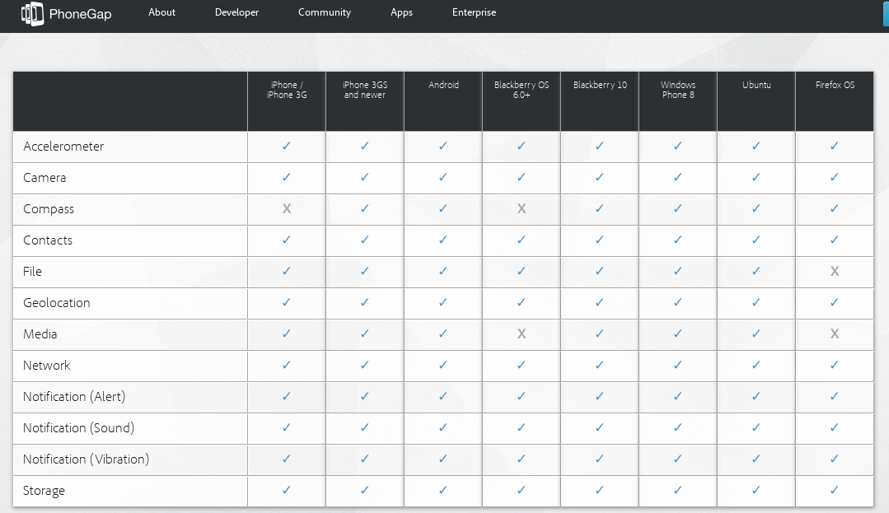
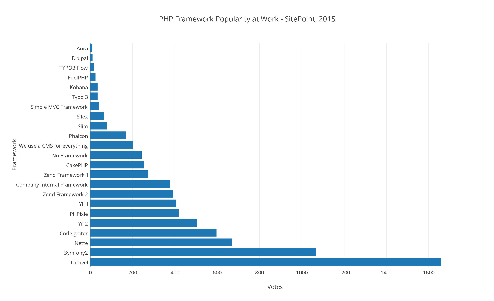

craftandbudget
Table of Contents
1 vision general
1.1 resumen
Craft&budget es una web app destinada para que aquellos artesanos que tengan una tienda online en el CMS prestashop puedan manejar el stock de su tienda. Podrán tanto manejar el stock de los productos que tengan en venta, como el stock de los materiales que usan para crear sus productos. Con craft and budget podrán además gestionar la creación de sus productos sabiendo cuantos materiales necesitan para crear sus productos y cuántos productos pueden crear con los materiales de los que disponen. Finalmente también dispondrán de una libreta de dirección para almacenar todos sus proveedores.
El stock de los materiales no se encuentra en la base de datos de prestashop, sino que los artesanos tendrán que crearlo con los materiales de que dispongan materiales.
La primera versión se conectará con prestashop únicamente, pero en un futuro p2odrá conectarse con otras tiendas online. Para conectarse, craft and budget se comunica con prestashop mediante una api rest por la cual se descargá todos los productos que el artesano tiene en la tienda. Usaremos una base de datos mysql para guardar todos los productos y los materiales.
1.2 abstract
2 Agradecimientos
3 Introducción
Nuestro proyecto de fin de ciclo trata sobre una solución web multiplataforma para que aquellos artesanos que venden sus productos a través de prestashop puedan manejar su stock de materiales de una manera cómoda y sencilla y que además esté sincronizada con su tienda. En nuestra aplicación web, los artesanos podrán tanto añadir como quitar materiales de su inventario, dependiendo de si fabrican o compran materiales para sus productos. También podrán crear una lista de contactos de sus proveedores, para poder tenerlos a mano cuando los necesiten.
Prestashop es un CRM open source, de fácil uso, para la creación de tiendas online. Actualmente se estima que hay en la red alrededor de 125000 tiendas onlines que usan prestashop y cada vez se está haciendo más popular.
Además es de fácil uso y está destinado a personas que tiene tiendas de tamaño pequeño-medio, de entre 500/1000 unidades a la venta. Estas fueron las principales razones por las que en un principio nos decidimos a crear un módulo para este. Es open source, es de fácil uso y está destinado a pequeñas tiendas. El principal problema que nos encontramos cuando estábamos creando el módulo es la escasa documentación que hay sobre como hacerlo, ya que aunque prestashop es open source, gana dinero de dos maneras: mediante servicios de hosting, y mediante cursos para que los usuarios aprendan cómo usarlo y que los desarrolladores aprendan cómo funciona.
Fue entonces cuando decidimos que en vez de crear un módulo deberíamos crear una web app que se comunicará con prestashop mediante su web service. Al final fue una buena decisión, ya que haciendo una página web ajena a prestashop no solo implicaba no tener que usar sus librerías php, las cuales como ya hemos dicho tienen una documentación justa, sino que también nos abría las puertas con otras posibilidades que no están contempladas en ellas. Por ejemplo, hacer que nuestra app no solo se comunique con prestashop, sino con otros CRM también destinados a la creación de tiendas online. De ésta manera, multiplicamos nuestros usuarios potenciales.
Además, si nos hubiésemos ceñido a crear el módulo, tan sólo habríamos usado php, html y css. Creando nuestra propia web desde cero no solo íbamos a aprender esas tres, sino que también nos veríamos obligados a usar tecnologías que están en boga tales como javascript y jquery, y lo más importante, aprender cómo crear páginas web para que se puedan ver bien en cualquier dispositivo.
3.1 Objetivos
Los perfiles de programadores web están muy solicitados. De hecho, a la hora de crear aplicaciones para dispositivos móviles, muchas empresas optan por realizarlas en html5 y de ahí exportarlas utilizando algún framework como phonegap. Estas tecnologías se están desarrollando muy rápido y cada vez se puede acceder a más funcionalidades de los dispositivos móviles, algunas de las cuales se consideraban inviables en un pasado.6 
Durante los dos años que han durado los estudios nos hemos centrado en la programación java. Consideramos interesante y de un valor añadido el aprender a realizar aplicaciones webs multidispositivo.
El objetivo principal que perseguimos al empezar el proyecto era el de tener una visión general del proceso de creación de páginas webs, así de las tecnologías más usadas y las ventajas de unas respecto de otra. También las ventajas que ofrece el encapsular tu aplicación desde html5 en vez de crearla directamente con tecnologías nativas.
- Investigación sobre las diferentes tecnologías que hay para realizar el back end de un página web, cuales son las ventajas y desventajas de usar unos frente a otros. Porque es ampliamente usado PHP
- Como maquetar para que la págian web pueda verse correctamente en diferentes tamaños de pantallas.
- Las diferentes plataformas de web hosting que hay disponibles y cuales son los puntos en los que tienes que centrar para escoger uno u otro.
- Que tecnologías existen hay para exportar tu página web a aplicaciones nativas de android e IOs.
- XAMPP
3.1.1 Backend de la aplicación
El backend de la aplicación es la parte del código de la página web que se encarga de la manipulación y flujo de los datos. Generalmente está compuesta de tres elementos: un servidor, una aplicación y una base de datos. Para enlazar estos tres elementos se usan lenguajes especializados que se ejecutan desde el lado del servidor.
Para realizar nuestra aplicaciónno, nos hemos decantado por el lenguaje de script PHP. Acutalmente, según W3tech6, PHP es usado por el 81.9% de páginas web del plantea.
En el mundo profesiona generalmente se usa php mediante un framework para facilitar el proceso de creción de software. Por ello decidimos usar uno para experimentar de primera mano la ventajas que ofrece. Finalmente elegimos el framework Codeigniter el cual esta basado en MVC. A pesar de que hayan aparecido nuevos frameworks muy potentes como laravel, hemos decidido realizar el proyecto en codeigniter porque es rápido, fácil de instalar y configurar, está bien documentado y nos aporta una buena introducción a la convenciones de MVC en php. Además tiene un sistema de ruteo fácil, es fácil de extender y existentes una amplia base de librerías. 6

En cuanto a nuestra base de datos, nuestra aplicación correrá en una base de datos MySQL. En un principio habíamos decidido utilizar mongodb, pero existía el problema que casi ninguno de los proveedores que barajeabamos para albergar nuestra aplicación ofrecía mongodb como una solución por defecto, sino que era de pago. Mongodb nos parecía una buena solución ya que nuestra app necesitaba una base de datos dinámica, en la que no es necesario seguir ningún esquema. Por ejemplo, los productos que los artesanos venden en la tienda, pueden tener una gran variedad de materiales. Y además un mismo material puede proveenir de distintos proveedores. Usando mongodb podríamos haber conseguido una base de datos dinámica y menos rígida más apropiada para la gestión de materiales de artesanos a pequeña escala.
Finalmente nos decidimos por MySQL, ya que esta está disponible en la mayoría de los servidores de hosting, PHP se integra bien con éste, y es rápido. Es la segunda de bases de datos más usada hasta el momento, lo que quiere decir que está muy bien demandada en el mundo profesional.6 (((db-engines-ranking)http://db-engines.com/en/ranking))
3.1.2 Como realizar un página web responsive
Para la maquetación usaremos el lenguaje de marcas HTML junto con css. De igual modo, que para el backend, para facilitar el proceso de diseño de esta usaremos el framework twitter bootstrap.
3.1.3 Alternativas de web hosting, y como usarlas
3.2 Motivación
Cada vez son más las personas que se animan a crear artseanías y venderlas en internet. Existen varios tiendas online en las que los artesanos pueden publicar sus productos, el problema de estás es que cobran un porcentaje por cada venta que hagas. Por ello, muchos artesanos optan por crearse sus propias tiendas online para asi evitar pérdidas.
Existen muchos CMS especializados en la creación de tiendas online. Shopify, bigcommerce, 3dcart. Todas estas tiene el inconveniente que son de pago. Entre todos ellas esta teniendo mucho éxito prestashop, la cuál es gratuita y open source. Es de fácil uso y cada vez es más usada, sobre todo por gente que no tiene conocimientos de programación. Está basado en módulos, los hay gratuitos y otros de pago, por los cuales puedes extender la funcionalidad de tu tienda.
El problema con prestashop, es que no tiene ningún módulo para ayudar a la creación de productos para los artesanos. No tiene ningún módulo para facilitar el proceso de creación de artesanías. En un principio teníamos pensado crear un módulo, pero decidimos sincronizarlo con prestashop a través de su api web basada en api rest. Tomamos esta decisión para así también poder sincronizar nuestra aplicación web con otra tiendas online que no sean prestashop. La idea es que en un futuro craft and budget sea una herramienta de gestión para los artesanos en los que pueden exportar e importar sus prodcutor a diferentes tiendas online. De esta manera tendríamos mas usuario potenciales.
3.3 Antecedentes
Después de investigar diferentes tecnologías disponibles, más tarde expondremos cuales, nos decantamos por las siguientes:
4 Desarrollo de la práctica
En esta sección se ofrece información soblre la realización del trabajo en sí. En esta parte se describe lo que se ha hecho, cómo se ha llevado a cabo, por qué se ha hecho así y no de otra manera, qué materiales o herramientas ha sido necesario utilizar, qué metodología de trabajo y validación se ha utilizado, etc.
4.1 Material
A continuación vamos a detallar cada tecnología que ha estado implicada en la realización de nuestro proyecto. Abrir una sección por cada tecnología usada o implicada en la realización del trabajo (ej.: BDs, Java, Android, etc.). En este capítulo se pretende ofrecer un resumen destinado a lectores no familiarizados con la tecnología utilizada. Destinar más páginas según la importancia en el trabajo, de dos a cuatro páginas cada sección con todas las referencias bibliográficas que se consideren oportunas.
4.1.1 PHP
PHP es una lenguage de scripting diseñado específicamente para el uso de programación web. Tiene características que ayudan a los programadores al desarrollo de aplicaciones web dinámicas.
PHP es el acrónimo de HyperText Preprocessor. Para crear páginas web dinámicas, es necesario recuperar datos y mostrarlos en la página web. Para almacenar los datos hemos escogido MySql, el cual es un sistema gestor de bases de datos gratuito y popular, que se integra perfectamente con php con el fin de crear páginas webs dinámica y funcionales. MySQL una base de datos RDBMS (Relational database managment system) rápida, y fácil de usar que se usa en la mayoría de páginas web.
En resumen, las razones por las que hemos escogido php y MySQL como backend de nuestra aplicación son:
- Son gratuitas. La mejor opción de coste-eficiencia.
- Son orientadas a la creación de páginas webs. Ambos fueron creados específicamente para ser usados en la programación de páginas webs dinámicas.
- Son fáciles de usar. Ambos fueron creados para crear webs rápidamente.
- Son rápidas. Fueron diseñados para que fuesen rápidos. Juntos proveen una de las maneras más rápidas de crear páginas webs dinámicas.
- Se comunican bien entre si. PHP tiene caracterísitcas integradas para comunicarse con MySql. No es necesario tener un conocimiento de los detalles técnicos, PHP se encarga de ellos.
- Ambos tienen una amplia comunidad de desarrolladores. Tiene una amplia base de soporte técnico, además, como se suelen usar juntos, comparten la misma comunidad de desarrolladores.
- Al ser ambos de código abierto, son customizables. Permiten a los programadores modificar el software PHP y MySQL para que se ajusten a sus necesidades particulares.
4.1.2 Framework codeigniter php
Para la parte del servidor, decidimos usar el framework de php codeigniter. Queríamos asegurarnos de que desarrollabamos una página web estructurada, de fácil mantenimiento y legibilidad. Usar un framework te garantiza todo eso.
Codeigniter te permite ahorrar tiempo, ya que este se encargar de la sanitazión de los datos, manejor de errores, procesos de logeo, proceso de registro, y manejo de las sesiones. También cuenta con multitud de librerías que te facilitan tareas como enviar e-mails, validación de informes, subida de ficheros a la base de datos. Sin todas estas librerías el desarrollo de la página web habría sido mucho mas lenta, tediosa e insecura.
Además al usar un framework, es difícil que acabes con una estructura de directorio poco organizada, ya que la mayoría de estos viene con una estructura predefinida para usar. En concreto, codeigniter usa el modelo MVC (modelo vista controlador), el cual te permite separa la lógica de las interfaces de usuario de manera que la páginas web contienen pocos scripts. En el caso de codeigniter, el modelo representa la estructura de datos. Es donde se realizan las conexiones con las bases de datos y donde se encuentran las funciones que permiten insertar, coger, y actualizar los datos. La vista es donde se presenta la información al usuario. Generalmente, en codeingniter se suelen separa en footer, body y el header para no repetir código. Por último el controlador es un intermediario entre la la vista y el modelo. Además es el encargado de procesar las request de http como los get y post de los formularios. También es el encargado de generar las vistas.
Codeigniter ofrece también flexibilidad a la hora de cambiar la plataforma de la base de datos. Tan solo tienes que cambiar algunos archivos de configuración y ya está lista para cambiar la plataforma en la que corre tu aplicaición.
Los framework ofrecen por defectos buenas medidas de seguridad. Por ejemplo, codeigniter ofrece las siguientes funcionalidades por defecto:
- Cada valor que a un objeto de la base de datos es filtrado contra ataques SQL de inyección.
- Todas las funciones generadoras de HTML, como las de formularios y URL filtran los datos de salida automaticamente.
-Todo dato ingresado por el usuario puede ser filtrado contra XSS.
- Posibildad de encriptar cookies automáticamente tan solo cambiando opciones de configuración.
Optimización de seo por defecto. Las URLs generados por codeigniter son limpias y amigables con los sistemas de búsqueda online. Lo consigue porque en vez de usar direccionamiento de URL standard, por ejemplo "http://www.example.com/catalog.asp?itemid=232&template=fresh&crcat=ppc&crsource=google&crkw=buy-a-lot" usa un sistema personalizado en el que es mucho mas legible, y es comprensible lo que hace la url, ya que como ya se detallarás más adelante, codeigniter usa query string del tipoe "example.com/news/article/345" en donde:
- example.com: Dominio de la web.
- news: controlador que se esta utilizando
- article: método dentro del controlador que se esta llamando.
- 345: parámetro que se le esta pasando al controlador.
4.1.3 twitter bootstrap
4.1.4 api rest
4.1.5 base de datos en prestashop
4.1.6 comunicarse con prestashop mediante su web api
4.2 Planificación
4.3 Descripción del trabajo realizado
4.4 Resultados y validación
5 Conclusiones
5.1 Aportaciones
5.2 Trabajo futuro
6 Bibliografía y webgrafía
http://w3techs.com/technologies/overview/programming_language/all
http://www.sitepoint.com/best-php-framework-2015-sitepoint-survey-results/
http://db-engines.com/en/ranking
http://web2.0entrepreneur.com/7/why-you-should-use-a-web-application-framework.html
http://es.wikipedia.org/wiki/Inyecci%C3%B3n_SQL
http://www.codeigniter.com/user_guide/
http://www.smartec.la/blog/por-que-usar-un-framework((imagenes de frameworks))